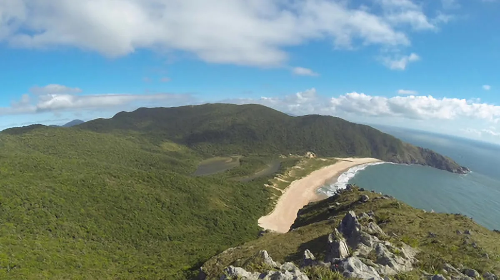

Pântano do SulLagoinha do Leste
Barco saindo do Pântano do Sul
Sai da Praia do Pântano do Sul (no costão, 15 min antes) direto para a areia, conforme o mar.
- ~30 min (6,4 km)
- Saídas a cada 45 min
- Até 25 por bote
R$ 80 / R$ 160só ida ou ida e volta
Ver barco Lagoinha